list.of.packages = c("dplyr", "reshape2", "tidyr", "ggplot2", "stats",
"cluster", "factoextra", "colorspace", "patchwork", "dendextend",
"tidyverse", "ggpubr", "NbClust", "HDclassif", "clValid",
"mclust")
new.packages <- list.of.packages[!(list.of.packages %in% installed.packages()[,"Package"])]
if(length(new.packages) > 0) {
install.packages(new.packages)
}
ll <- lapply(list.of.packages, require, character.only = T)
rm(list.of.packages, new.packages)Anàlisis de Componentes Principales (ACP)
1 Introducció
En moltes ocasions, per estudiar un fenomen, hi ha un gran nombre de variables disponibles, algunes de les quals estan correlacionades entre si, i l’anàlisi no és fàcil de realitzar. En aquestes situacions, és convenient aplicar un mètode, com el mètode de components principals, que permeti reduir el nombre de variables sense pèrdua substancial d’informació, i assegurar que aquestes noves variables no estiguin correlacionades, evitant així la informació redundant.
# Tratamiento de datos
# ==============================================================================
import numpy as np
import pandas as pd
import statsmodels.api as sm
# Gráficos
# ==============================================================================
import matplotlib.pyplot as plt
import matplotlib.font_manager
from matplotlib import style
style.use('ggplot') or plt.style.use('ggplot')
# Preprocesado y modelado
# ==============================================================================
from sklearn.decomposition import PCA
from sklearn.pipeline import make_pipeline
from sklearn.preprocessing import StandardScaler
from sklearn.preprocessing import scale
# Configuración warnings
# ==============================================================================
import warnings
warnings.filterwarnings('ignore')2 Definició del problema
En aquest cas d’estudi es reduirà el nombre de variables economicofinanceres que descriuen un grup d’empreses dedicades al transport per carretera, conservant la major quantitat d’informació possible. El punt de partida és la informació economicofinancera per a l’any 2016 de 459 empreses. Per a cada empresa, les dades estan disponibles dins de les següents variables:
- Palanca financiera: palanca (%)
- Capital: capital social (milers d’euros)
- Guanys abans de l’impost d’interès Depreciació i amortització: ebitda.sales (%)
- Empleats: mà d’obra de l’empresa (persones)
- fons: fons propis (milers d’euros)
- Renda: renda operativa (milers d’euros)
- Reco: rendibilitat econòmica (%)
- Rfin: retorn financer (%)
- Reventes: resultat de l’any en vendes (%)
3 Descriptiva (EDA)
apply(X = db, MARGIN = 2, FUN = var) leverage capital ebitda.sales employees funds income
4.102338e+06 5.105017e+05 1.595078e+02 2.864593e+03 1.897116e+07 3.302072e+08
reco rfin res.sales
1.661846e+02 1.638810e+05 7.444749e+01 apply(X = db, MARGIN = 2, FUN = sd) leverage capital ebitda.sales employees funds income
2025.422983 714.494043 12.629640 53.521893 4355.589136 18171.602987
reco rfin res.sales
12.891262 404.822214 8.628296 print('----------------------')----------------------print('Media de cada variable')Media de cada variableprint('----------------------')----------------------pydb.mean(axis=0)leverage 194.964486
capital 142.250468
ebitda.sales 10.339530
employees 17.135076
funds 792.147930
income 3512.869621
reco 4.464370
rfin 33.925980
res.sales 2.417563
dtype: float64print('-------------------------')-------------------------print('Varianza de cada variable')Varianza de cada variableprint('-------------------------')-------------------------pydb.var(axis=0)leverage 4.102338e+06
capital 5.105017e+05
ebitda.sales 1.595078e+02
employees 2.864593e+03
funds 1.897116e+07
income 3.302072e+08
reco 1.661846e+02
rfin 1.638810e+05
res.sales 7.444749e+01
dtype: float64Fixeu-vos en l’alta variància entre les característiques, de manera que a mesura que es va estudiar, hem d’escalar les nostres dades per a PCA.
(Correlations <- cor(db)) leverage capital ebitda.sales employees funds
leverage 1.000000000 -0.004810751 0.039056257 0.005823987 -0.008740051
capital -0.004810751 1.000000000 -0.020858314 0.555979779 0.664155850
ebitda.sales 0.039056257 -0.020858314 1.000000000 -0.017033459 0.009833573
employees 0.005823987 0.555979779 -0.017033459 1.000000000 0.470561410
funds -0.008740051 0.664155850 0.009833573 0.470561410 1.000000000
income -0.001557898 0.708616985 -0.017765649 0.590286822 0.968580877
reco 0.042578483 0.026927060 0.607137189 0.031277344 0.088665116
rfin -0.883229777 -0.005619264 -0.024083476 -0.005369538 -0.005177150
res.sales 0.011504424 0.003212377 0.833051303 0.012390814 0.045899956
income reco rfin res.sales
leverage -0.001557898 0.04257848 -0.883229777 0.011504424
capital 0.708616985 0.02692706 -0.005619264 0.003212377
ebitda.sales -0.017765649 0.60713719 -0.024083476 0.833051303
employees 0.590286822 0.03127734 -0.005369538 0.012390814
funds 0.968580877 0.08866512 -0.005177150 0.045899956
income 1.000000000 0.08213367 -0.002498589 0.032885285
reco 0.082133672 1.00000000 -0.054264271 0.778311589
rfin -0.002498589 -0.05426427 1.000000000 -0.010521216
res.sales 0.032885285 0.77831159 -0.010521216 1.000000000corrplot::corrplot(Correlations) 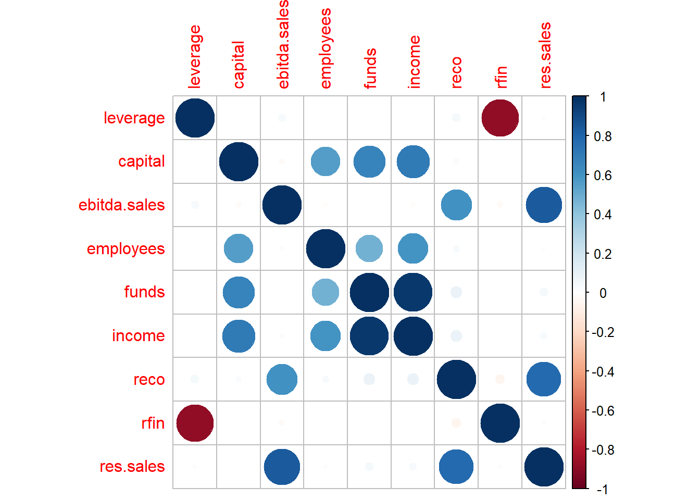
corrplot::corrplot(Correlations, method = "number", number.cex = 0.75) 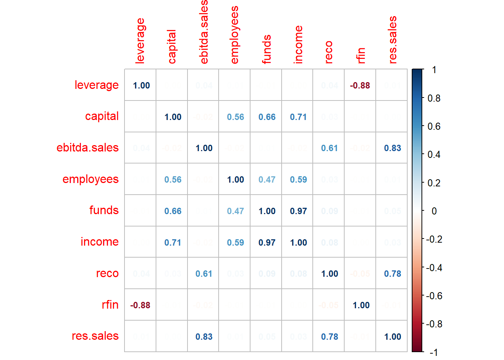
4 Extracció de les components principals (PCA)
4.1 Funcions clàssiques
(pca1 <- princomp(db, cor = TRUE))Call:
princomp(x = db, cor = TRUE)
Standard deviations:
Comp.1 Comp.2 Comp.3 Comp.4 Comp.5 Comp.6 Comp.7 Comp.8
1.7377611 1.5748797 1.3695262 0.7767213 0.6328808 0.6031328 0.3478603 0.3400504
Comp.9
0.1417537
9 variables and 459 observations.names(pca1) [1] "sdev" "loadings" "center" "scale" "n.obs" "scores" "call" Posant cor = TRUE estem escalant la db.
En el següent codi podem veure una altra forma de fer-ho:
(pca2 <- prcomp(db, scale = TRUE))Standard deviations (1, .., p=9):
[1] 1.7377611 1.5748797 1.3695262 0.7767213 0.6328808 0.6031328 0.3478603
[8] 0.3400504 0.1417537
Rotation (n x k) = (9 x 9):
PC1 PC2 PC3 PC4 PC5
leverage 0.00655167 -0.08475443 -0.701693265 -0.00451166 -0.03212559
capital 0.47912293 0.09232221 -0.004862422 -0.08111504 -0.43770776
ebitda.sales 0.06207123 -0.56245352 0.067324955 -0.05288579 -0.56734582
employees 0.41532340 0.07629194 -0.009402874 -0.83986630 0.19109492
funds 0.52358761 0.06373829 0.003191079 0.45460454 0.07067235
income 0.54613349 0.07992855 -0.001052963 0.27499508 0.11261109
reco 0.11310163 -0.53804853 0.047726376 0.04542996 0.65266209
rfin -0.01158476 0.08269831 0.702002522 -0.01260367 -0.01361748
res.sales 0.09338080 -0.59609773 0.088798740 -0.02678373 -0.07177909
PC6 PC7 PC8 PC9
leverage 0.02978363 -0.236982842 0.66401824 0.037145102
capital -0.75043525 -0.004197640 0.01119148 0.020748907
ebitda.sales 0.30502552 -0.462248076 -0.20543903 -0.040783841
employees 0.25683680 -0.007966801 -0.02155086 0.114942925
funds 0.26946841 -0.008540688 -0.03921824 0.660226599
income 0.24330824 0.011707222 0.04560329 -0.738667287
reco -0.37919389 -0.339318757 -0.09188864 0.005792861
rfin 0.01975233 -0.262989264 0.65503345 0.035392438
res.sales 0.03104641 0.738629937 0.27414379 0.022356680names(pca2) [1] "sdev" "rotation" "center" "scale" "x" Aquí, heu de posar scale = TRUE per tal d’estandarditzar la vostra base de dades.
Com podreu comprovar, els dos cosos son iguals.
La clase sklearn.decomposition.PCA incorpora las principales funcionalidades que se necesitan a la hora de trabajar con modelos PCA. El argumento n_components determina el número de componentes calculados. Si se indica None, se calculan todas las posibles (min(filas, columnas) - 1).
Por defecto, PCA() centra los valores pero no los escala. Esto es importante ya que, si las variables tienen distinta dispersión, como en este caso, es necesario escalarlas. Una forma de hacerlo es combinar un StandardScaler() y un PCA() dentro de un pipeline. Para más información sobre el uso de pipelines consultar Pipeline y ColumnTransformer.
# Entrenamiento modelo PCA con escalado de los datos
# ==============================================================================
pca_pipe = make_pipeline(StandardScaler(), PCA())
pca_pipe.fit(pydb)Pipeline(steps=[('standardscaler', StandardScaler()), ('pca', PCA())])In a Jupyter environment, please rerun this cell to show the HTML representation or trust the notebook. On GitHub, the HTML representation is unable to render, please try loading this page with nbviewer.org.
Pipeline(steps=[('standardscaler', StandardScaler()), ('pca', PCA())])StandardScaler()
PCA()
# Se extrae el modelo entrenado del pipeline
modelo_pca = pca_pipe.named_steps['pca']4.2 Importància de les components
summary(pca1)Importance of components:
Comp.1 Comp.2 Comp.3 Comp.4 Comp.5
Standard deviation 1.7377611 1.5748797 1.3695262 0.77672134 0.63288079
Proportion of Variance 0.3355348 0.2755829 0.2084002 0.06703289 0.04450423
Cumulative Proportion 0.3355348 0.6111177 0.8195179 0.88655083 0.93105506
Comp.6 Comp.7 Comp.8 Comp.9
Standard deviation 0.6031328 0.3478603 0.34005041 0.141753692
Proportion of Variance 0.0404188 0.0134452 0.01284825 0.002232679
Cumulative Proportion 0.9714739 0.9849191 0.99776732 1.000000000Components as a linear combination of the variables
pca1$loadings[,1:9] Comp.1 Comp.2 Comp.3 Comp.4 Comp.5
leverage 0.00655167 0.08475443 0.701693265 0.00451166 0.03212559
capital 0.47912293 -0.09232221 0.004862422 0.08111504 0.43770776
ebitda.sales 0.06207123 0.56245352 -0.067324955 0.05288579 0.56734582
employees 0.41532340 -0.07629194 0.009402874 0.83986630 -0.19109492
funds 0.52358761 -0.06373829 -0.003191079 -0.45460454 -0.07067235
income 0.54613349 -0.07992855 0.001052963 -0.27499508 -0.11261109
reco 0.11310163 0.53804853 -0.047726376 -0.04542996 -0.65266209
rfin -0.01158476 -0.08269831 -0.702002522 0.01260367 0.01361748
res.sales 0.09338080 0.59609773 -0.088798740 0.02678373 0.07177909
Comp.6 Comp.7 Comp.8 Comp.9
leverage 0.02978363 0.236982842 0.66401824 0.037145102
capital -0.75043525 0.004197640 0.01119148 0.020748907
ebitda.sales 0.30502552 0.462248076 -0.20543903 -0.040783841
employees 0.25683680 0.007966801 -0.02155086 0.114942925
funds 0.26946841 0.008540688 -0.03921824 0.660226599
income 0.24330824 -0.011707222 0.04560329 -0.738667287
reco -0.37919389 0.339318757 -0.09188864 0.005792861
rfin 0.01975233 0.262989264 0.65503345 0.035392438
res.sales 0.03104641 -0.738629937 0.27414379 0.022356680# Se combierte el array a dataframe para añadir nombres a los ejes.
pd.DataFrame(data = modelo_pca.components_, columns = pydb.columns, index = ['PC1', 'PC2', 'PC3', 'PC4', 'PC5', 'PC6', 'PC7', 'PC8', 'PC9']) leverage capital ebitda.sales ... reco rfin res.sales
PC1 0.006552 0.479123 0.062071 ... 0.113102 -0.011585 0.093381
PC2 0.084754 -0.092322 0.562454 ... 0.538049 -0.082698 0.596098
PC3 -0.701693 -0.004862 0.067325 ... 0.047726 0.702003 0.088799
PC4 0.004512 0.081115 0.052886 ... -0.045430 0.012604 0.026784
PC5 -0.032126 -0.437708 -0.567346 ... 0.652662 -0.013617 -0.071779
PC6 -0.029784 0.750435 -0.305026 ... 0.379194 -0.019752 -0.031046
PC7 -0.236983 -0.004198 -0.462248 ... -0.339319 -0.262989 0.738630
PC8 0.664018 0.011191 -0.205439 ... -0.091889 0.655033 0.274144
PC9 -0.037145 -0.020749 0.040784 ... -0.005793 -0.035392 -0.022357
[9 rows x 9 columns]La influencia de las variables en cada componente analizarse visualmente con un gráfico de tipo heatmap.
# Heatmap componentes
# ==============================================================================
fig, ax = plt.subplots(nrows=1, ncols=1, figsize=(4, 2))
componentes = modelo_pca.components_
plt.imshow(componentes.T, cmap='viridis', aspect='auto')
plt.yticks(range(len(pydb.columns)), pydb.columns)([<matplotlib.axis.YTick object at 0x000002C8115EEA50>, <matplotlib.axis.YTick object at 0x000002C8115EDEE0>, <matplotlib.axis.YTick object at 0x000002C8114B3F80>, <matplotlib.axis.YTick object at 0x000002C8115EE5D0>, <matplotlib.axis.YTick object at 0x000002C811643320>, <matplotlib.axis.YTick object at 0x000002C811642540>, <matplotlib.axis.YTick object at 0x000002C8116419A0>, <matplotlib.axis.YTick object at 0x000002C811643E60>, <matplotlib.axis.YTick object at 0x000002C811642F60>], [Text(0, 0, 'leverage'), Text(0, 1, 'capital'), Text(0, 2, 'ebitda.sales'), Text(0, 3, 'employees'), Text(0, 4, 'funds'), Text(0, 5, 'income'), Text(0, 6, 'reco'), Text(0, 7, 'rfin'), Text(0, 8, 'res.sales')])plt.xticks(range(len(pydb.columns)), np.arange(modelo_pca.n_components_) + 1)([<matplotlib.axis.XTick object at 0x000002C8111B8950>, <matplotlib.axis.XTick object at 0x000002C8115EE8A0>, <matplotlib.axis.XTick object at 0x000002C8114B0740>, <matplotlib.axis.XTick object at 0x000002C81169DE80>, <matplotlib.axis.XTick object at 0x000002C81169EA20>, <matplotlib.axis.XTick object at 0x000002C81169DDC0>, <matplotlib.axis.XTick object at 0x000002C81169CBC0>, <matplotlib.axis.XTick object at 0x000002C81169F230>, <matplotlib.axis.XTick object at 0x000002C81169FB30>], [Text(0, 0, '1'), Text(1, 0, '2'), Text(2, 0, '3'), Text(3, 0, '4'), Text(4, 0, '5'), Text(5, 0, '6'), Text(6, 0, '7'), Text(7, 0, '8'), Text(8, 0, '9')])plt.grid(False)
plt.colorbar();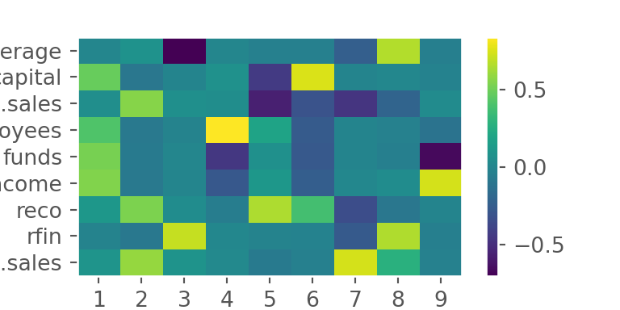
\(Pc1 = Comp.1 = 0.0066 * leverage + 0.4791 * capital + 0.0621 * ebitda.sales + ... −0.0116 * rfin + 0.0934 * res.ventas\)
Analizar con detalle el vector de loadings que forma cada componente puede ayudar a interpretar qué tipo de información recoge cada una de ellas. Por ejemplo, la primera componente es el resultado de la siguiente combinación lineal de las variables originales.
STOP and analyze the linear combinations (PCi). Get information from loadings to see how important the variables are to define the PCs
Let’s move to FACTOMINER and FACTOEXTRA packages.
5 FactoMineR i FactoExtra
These packages use function PCA, PCA is the same as prcomp() function.
library(FactoMineR)
library(factoextra)
library(corrplot)These functions include:
get_eigenvalue(res.pca): Extract the eigenvalues/variances of principal componentsfviz_eig(res.pca): Visualize the eigenvaluesget_pca_ind(res.pca),get_pca_var(res.pca): Extract the results for individuals and variables, respectively.fviz_pca_ind(res.pca),fviz_pca_var(res.pca)`: Visualize the results for individuals and variables, respectively.fviz_pca_biplot(res.pca): Make a biplot of individuals and variables.
Apliquem el PCA amb la base de dades.
5.1 Create a PCA
(dec.pca <- PCA(db, scale.unit = TRUE, ncp = Inf, graph = F))**Results for the Principal Component Analysis (PCA)**
The analysis was performed on 459 individuals, described by 9 variables
*The results are available in the following objects:
name description
1 "$eig" "eigenvalues"
2 "$var" "results for the variables"
3 "$var$coord" "coord. for the variables"
4 "$var$cor" "correlations variables - dimensions"
5 "$var$cos2" "cos2 for the variables"
6 "$var$contrib" "contributions of the variables"
7 "$ind" "results for the individuals"
8 "$ind$coord" "coord. for the individuals"
9 "$ind$cos2" "cos2 for the individuals"
10 "$ind$contrib" "contributions of the individuals"
11 "$call" "summary statistics"
12 "$call$centre" "mean of the variables"
13 "$call$ecart.type" "standard error of the variables"
14 "$call$row.w" "weights for the individuals"
15 "$call$col.w" "weights for the variables" summary(dec.pca)
Call:
PCA(X = db, scale.unit = TRUE, ncp = Inf, graph = F)
Eigenvalues
Dim.1 Dim.2 Dim.3 Dim.4 Dim.5 Dim.6 Dim.7
Variance 3.020 2.480 1.876 0.603 0.401 0.364 0.121
% of var. 33.553 27.558 20.840 6.703 4.450 4.042 1.345
Cumulative % of var. 33.553 61.112 81.952 88.655 93.106 97.147 98.492
Dim.8 Dim.9
Variance 0.116 0.020
% of var. 1.285 0.223
Cumulative % of var. 99.777 100.000
Individuals (the 10 first)
Dist Dim.1 ctr cos2 Dim.2 ctr cos2 Dim.3
1 | 28.527 | 26.561 50.897 0.867 | -2.605 0.596 0.008 | 0.170
2 | 22.945 | 20.037 28.966 0.763 | -3.187 0.892 0.019 | -0.173
3 | 7.625 | 6.558 3.103 0.740 | -0.687 0.041 0.008 | 0.044
4 | 4.198 | 3.777 1.029 0.810 | -0.869 0.066 0.043 | -0.030
5 | 13.359 | 7.269 3.812 0.296 | -1.596 0.224 0.014 | -0.309
6 | 8.371 | 6.242 2.811 0.556 | -1.608 0.227 0.037 | -0.178
7 | 2.270 | 2.026 0.296 0.797 | -0.268 0.006 0.014 | -0.050
8 | 3.733 | 2.836 0.580 0.577 | -0.178 0.003 0.002 | -0.026
9 | 2.520 | 2.020 0.294 0.642 | 0.249 0.005 0.010 | 0.102
10 | 1.641 | 0.770 0.043 0.220 | -0.691 0.042 0.177 | -0.582
ctr cos2
1 0.003 0.000 |
2 0.003 0.000 |
3 0.000 0.000 |
4 0.000 0.000 |
5 0.011 0.001 |
6 0.004 0.000 |
7 0.000 0.000 |
8 0.000 0.000 |
9 0.001 0.002 |
10 0.039 0.126 |
Variables
Dim.1 ctr cos2 Dim.2 ctr cos2 Dim.3 ctr
leverage | 0.011 0.004 0.000 | 0.133 0.718 0.018 | -0.961 49.237
capital | 0.833 22.956 0.693 | -0.145 0.852 0.021 | -0.007 0.002
ebitda.sales | 0.108 0.385 0.012 | 0.886 31.635 0.785 | 0.092 0.453
employees | 0.722 17.249 0.521 | -0.120 0.582 0.014 | -0.013 0.009
funds | 0.910 27.414 0.828 | -0.100 0.406 0.010 | 0.004 0.001
income | 0.949 29.826 0.901 | -0.126 0.639 0.016 | -0.001 0.000
reco | 0.197 1.279 0.039 | 0.847 28.950 0.718 | 0.065 0.228
rfin | -0.020 0.013 0.000 | -0.130 0.684 0.017 | 0.961 49.281
res.sales | 0.162 0.872 0.026 | 0.939 35.533 0.881 | 0.122 0.789
cos2
leverage 0.923 |
capital 0.000 |
ebitda.sales 0.009 |
employees 0.000 |
funds 0.000 |
income 0.000 |
reco 0.004 |
rfin 0.924 |
res.sales 0.015 |get_pca(dec.pca)Principal Component Analysis Results for variables
===================================================
Name Description
1 "$coord" "Coordinates for the variables"
2 "$cor" "Correlations between variables and dimensions"
3 "$cos2" "Cos2 for the variables"
4 "$contrib" "contributions of the variables" 5.2 Determinate the components
Determination of the number of components to retain:
- Choose components with eigenvalue >> 1 (only is data was scaled)
- use the Elbow method
- by confirming % o acc.variance >>70-80%
(eigenvalues <- get_eigenvalue(dec.pca)) eigenvalue variance.percent cumulative.variance.percent
Dim.1 3.01981357 33.5534841 33.55348
Dim.2 2.48024591 27.5582879 61.11177
Dim.3 1.87560196 20.8400217 81.95179
Dim.4 0.60329604 6.7032894 88.65508
Dim.5 0.40053809 4.4504232 93.10551
Dim.6 0.36376923 4.0418803 97.14739
Dim.7 0.12100680 1.3445200 98.49191
Dim.8 0.11563428 1.2848254 99.77673
Dim.9 0.02009411 0.2232679 100.00000fviz_eig(dec.pca, addlabels = TRUE, ylim = c(0, 50))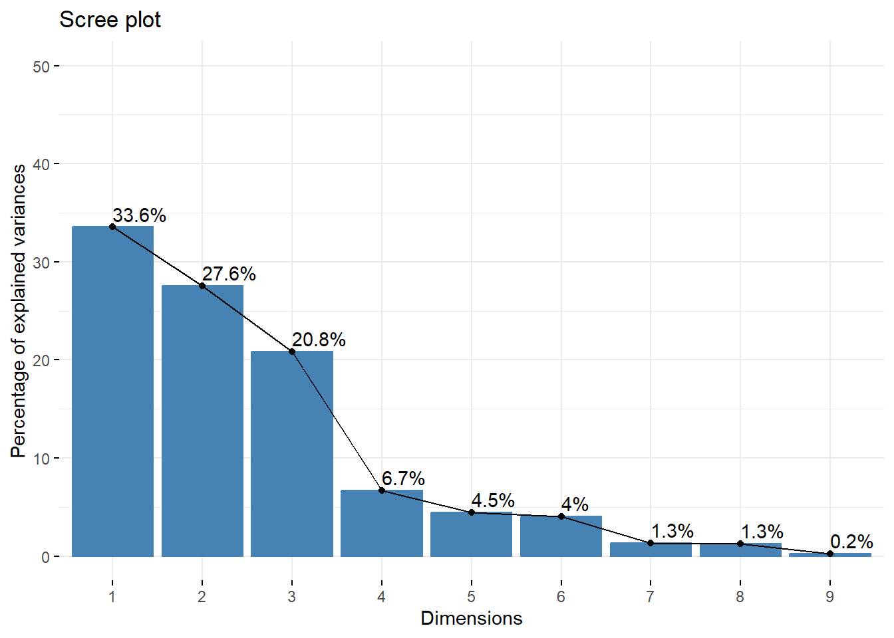
**@SR FALTA EL ACUMULADO*
NOTE: * var$coord: coordinates of variables in the factorial space . * var$cos2: represents the quality of representation for variables on the factor map. It’s calculated as the squared coordinates: var$cos2 = var$coord * var$coord.
var$contrib: contains the contributions (in percentage) of the variables to the principal components. The contribution of a variable (var) to a given principal component is (in percentage) : (var$cos2* 100) / (total cos2 of the component).
Note thas var$coord is the same as
(Correl <- cor(db, pca1$scores)) Comp.1 Comp.2 Comp.3 Comp.4 Comp.5
leverage 0.01138524 0.1334780 0.960987296 0.003504303 0.020331669
capital 0.83260118 -0.1453964 0.006659214 0.063003785 0.277016832
ebitda.sales 0.10786497 0.8857966 -0.092203289 0.041077524 0.359062267
employees 0.72173284 -0.1201506 0.012877483 0.652342082 -0.120940300
funds 0.90987017 -0.1003801 -0.004370266 -0.353101047 -0.044727171
income 0.94904952 -0.1258779 0.001442060 -0.213594547 -0.071269397
reco 0.19654360 0.8473617 -0.065362521 -0.035286423 -0.413057299
rfin -0.02013154 -0.1302399 -0.961410832 0.009789537 0.008618243
res.sales 0.16227352 0.9387822 -0.121612199 0.020803494 0.045427607
Comp.6 Comp.7 Comp.8 Comp.9
leverage 0.01796349 0.082436928 0.225799676 0.0052654554
capital -0.45261215 0.001460192 0.003805667 0.0029412341
ebitda.sales 0.18397091 0.160797765 -0.069859627 -0.0057812600
employees 0.15490671 0.002771334 -0.007328379 0.0162935840
funds 0.16252525 0.002970967 -0.013336180 0.0935895577
income 0.14674719 -0.004072478 0.015507418 -0.1047088149
reco -0.22870429 0.118035532 -0.031246770 0.0008211594
rfin 0.01191328 0.091483530 0.222744395 0.0050170087
res.sales 0.01872511 -0.256940048 0.093222707 0.0031691419dec.pca$var$coord Dim.1 Dim.2 Dim.3 Dim.4 Dim.5
leverage 0.01138524 0.1334780 -0.960987296 0.003504303 0.020331669
capital 0.83260118 -0.1453964 -0.006659214 0.063003785 0.277016832
ebitda.sales 0.10786497 0.8857966 0.092203289 0.041077524 0.359062267
employees 0.72173284 -0.1201506 -0.012877483 0.652342082 -0.120940300
funds 0.90987017 -0.1003801 0.004370266 -0.353101047 -0.044727171
income 0.94904952 -0.1258779 -0.001442060 -0.213594547 -0.071269397
reco 0.19654360 0.8473617 0.065362521 -0.035286423 -0.413057299
rfin -0.02013154 -0.1302399 0.961410832 0.009789537 0.008618243
res.sales 0.16227352 0.9387822 0.121612199 0.020803494 0.045427607
Dim.6 Dim.7 Dim.8 Dim.9
leverage 0.01796349 0.082436928 0.225799676 0.0052654554
capital -0.45261215 0.001460192 0.003805667 0.0029412341
ebitda.sales 0.18397091 0.160797765 -0.069859627 -0.0057812600
employees 0.15490671 0.002771334 -0.007328379 0.0162935840
funds 0.16252525 0.002970967 -0.013336180 0.0935895577
income 0.14674719 -0.004072478 0.015507418 -0.1047088149
reco -0.22870429 0.118035532 -0.031246770 0.0008211594
rfin 0.01191328 0.091483530 0.222744395 0.0050170087
res.sales 0.01872511 -0.256940048 0.093222707 0.00316914195.3 Quality of variables into PCAs (cos\(^2\))
(Quality <- Correl^2) Comp.1 Comp.2 Comp.3 Comp.4 Comp.5
leverage 0.0001296236 0.01781638 9.234966e-01 1.228014e-05 4.133768e-04
capital 0.6932247272 0.02114010 4.434514e-05 3.969477e-03 7.673833e-02
ebitda.sales 0.0116348519 0.78463562 8.501446e-03 1.687363e-03 1.289257e-01
employees 0.5208982951 0.01443617 1.658296e-04 4.255502e-01 1.462656e-02
funds 0.8278637188 0.01007617 1.909922e-05 1.246803e-01 2.000520e-03
income 0.9006949905 0.01584523 2.079538e-06 4.562263e-02 5.079327e-03
reco 0.0386293887 0.71802181 4.272259e-03 1.245132e-03 1.706163e-01
rfin 0.0004052788 0.01696243 9.243108e-01 9.583504e-05 7.427411e-05
res.sales 0.0263326955 0.88131199 1.478953e-02 4.327854e-04 2.063667e-03
Comp.6 Comp.7 Comp.8 Comp.9
leverage 0.0003226868 6.795847e-03 5.098549e-02 2.772502e-05
capital 0.2048577565 2.132162e-06 1.448310e-05 8.650858e-06
ebitda.sales 0.0338452958 2.585592e-02 4.880367e-03 3.342297e-05
employees 0.0239960882 7.680292e-06 5.370513e-05 2.654809e-04
funds 0.0264144560 8.826642e-06 1.778537e-04 8.759005e-03
income 0.0215347377 1.658508e-05 2.404800e-04 1.096394e-02
reco 0.0523056530 1.393239e-02 9.763606e-04 6.743027e-07
rfin 0.0001419262 8.369236e-03 4.961507e-02 2.517038e-05
res.sales 0.0003506298 6.601819e-02 8.690473e-03 1.004346e-05dec.pca$var$cos2 Dim.1 Dim.2 Dim.3 Dim.4 Dim.5
leverage 0.0001296236 0.01781638 9.234966e-01 1.228014e-05 4.133768e-04
capital 0.6932247272 0.02114010 4.434514e-05 3.969477e-03 7.673833e-02
ebitda.sales 0.0116348519 0.78463562 8.501446e-03 1.687363e-03 1.289257e-01
employees 0.5208982951 0.01443617 1.658296e-04 4.255502e-01 1.462656e-02
funds 0.8278637188 0.01007617 1.909922e-05 1.246803e-01 2.000520e-03
income 0.9006949905 0.01584523 2.079538e-06 4.562263e-02 5.079327e-03
reco 0.0386293887 0.71802181 4.272259e-03 1.245132e-03 1.706163e-01
rfin 0.0004052788 0.01696243 9.243108e-01 9.583504e-05 7.427411e-05
res.sales 0.0263326955 0.88131199 1.478953e-02 4.327854e-04 2.063667e-03
Dim.6 Dim.7 Dim.8 Dim.9
leverage 0.0003226868 6.795847e-03 5.098549e-02 2.772502e-05
capital 0.2048577565 2.132162e-06 1.448310e-05 8.650858e-06
ebitda.sales 0.0338452958 2.585592e-02 4.880367e-03 3.342297e-05
employees 0.0239960882 7.680292e-06 5.370513e-05 2.654809e-04
funds 0.0264144560 8.826642e-06 1.778537e-04 8.759005e-03
income 0.0215347377 1.658508e-05 2.404800e-04 1.096394e-02
reco 0.0523056530 1.393239e-02 9.763606e-04 6.743027e-07
rfin 0.0001419262 8.369236e-03 4.961507e-02 2.517038e-05
res.sales 0.0003506298 6.601819e-02 8.690473e-03 1.004346e-055.4 Calculation of contributions
5.4.1 Contributions of variables for PCAs
(Contrib <- Quality[, 1]/eigenvalues[1]) leverage capital ebitda.sales employees funds income
4.292438e-05 2.295588e-01 3.852838e-03 1.724935e-01 2.741440e-01 2.982618e-01
reco rfin res.sales
1.279198e-02 1.342066e-04 8.719974e-03 Here, contribution of variables in PC1, for another PCi,put the appropriate value (for instance, for PC2, change 1 for 2)
5.5 Coordinates of variables
head(dec.pca$var$coord) Dim.1 Dim.2 Dim.3 Dim.4 Dim.5
leverage 0.01138524 0.1334780 -0.960987296 0.003504303 0.02033167
capital 0.83260118 -0.1453964 -0.006659214 0.063003785 0.27701683
ebitda.sales 0.10786497 0.8857966 0.092203289 0.041077524 0.35906227
employees 0.72173284 -0.1201506 -0.012877483 0.652342082 -0.12094030
funds 0.90987017 -0.1003801 0.004370266 -0.353101047 -0.04472717
income 0.94904952 -0.1258779 -0.001442060 -0.213594547 -0.07126940
Dim.6 Dim.7 Dim.8 Dim.9
leverage 0.01796349 0.082436928 0.225799676 0.005265455
capital -0.45261215 0.001460192 0.003805667 0.002941234
ebitda.sales 0.18397091 0.160797765 -0.069859627 -0.005781260
employees 0.15490671 0.002771334 -0.007328379 0.016293584
funds 0.16252525 0.002970967 -0.013336180 0.093589558
income 0.14674719 -0.004072478 0.015507418 -0.1047088155.6 Cos2: quality on the factore map
head(dec.pca$var$cos2) Dim.1 Dim.2 Dim.3 Dim.4 Dim.5
leverage 0.0001296236 0.01781638 9.234966e-01 1.228014e-05 0.0004133768
capital 0.6932247272 0.02114010 4.434514e-05 3.969477e-03 0.0767383251
ebitda.sales 0.0116348519 0.78463562 8.501446e-03 1.687363e-03 0.1289257114
employees 0.5208982951 0.01443617 1.658296e-04 4.255502e-01 0.0146265563
funds 0.8278637188 0.01007617 1.909922e-05 1.246803e-01 0.0020005198
income 0.9006949905 0.01584523 2.079538e-06 4.562263e-02 0.0050793269
Dim.6 Dim.7 Dim.8 Dim.9
leverage 0.0003226868 6.795847e-03 5.098549e-02 2.772502e-05
capital 0.2048577565 2.132162e-06 1.448310e-05 8.650858e-06
ebitda.sales 0.0338452958 2.585592e-02 4.880367e-03 3.342297e-05
employees 0.0239960882 7.680292e-06 5.370513e-05 2.654809e-04
funds 0.0264144560 8.826642e-06 1.778537e-04 8.759005e-03
income 0.0215347377 1.658508e-05 2.404800e-04 1.096394e-025.7 Contributions to the principal components
head(dec.pca$var$contrib) Dim.1 Dim.2 Dim.3 Dim.4 Dim.5
leverage 0.004292438 0.7183313 4.923734e+01 0.002035508 0.1032054
capital 22.955878272 0.8523390 2.364315e-03 0.657965014 19.1588084
ebitda.sales 0.385283782 31.6353961 4.532650e-01 0.279690703 32.1881276
employees 17.249352750 0.5820460 8.841405e-03 70.537540588 3.6517267
funds 27.414398261 0.4062569 1.018298e-03 20.666528605 0.4994581
income 29.826178656 0.6388574 1.108731e-04 7.562229359 1.2681258
Dim.6 Dim.7 Dim.8 Dim.9
leverage 0.08870647 5.616086758 44.09202250 0.13797586
capital 56.31530640 0.001762018 0.01252492 0.04305171
ebitda.sales 9.30405679 21.367328399 4.22051950 0.16633217
employees 6.59651401 0.006346992 0.04644396 1.32118761
funds 7.26132225 0.007294335 0.15380706 43.58991619
income 5.91988984 0.013705906 0.20796602 54.562936165.8 Correlation circle
fviz_pca_var(dec.pca, col.var = "black")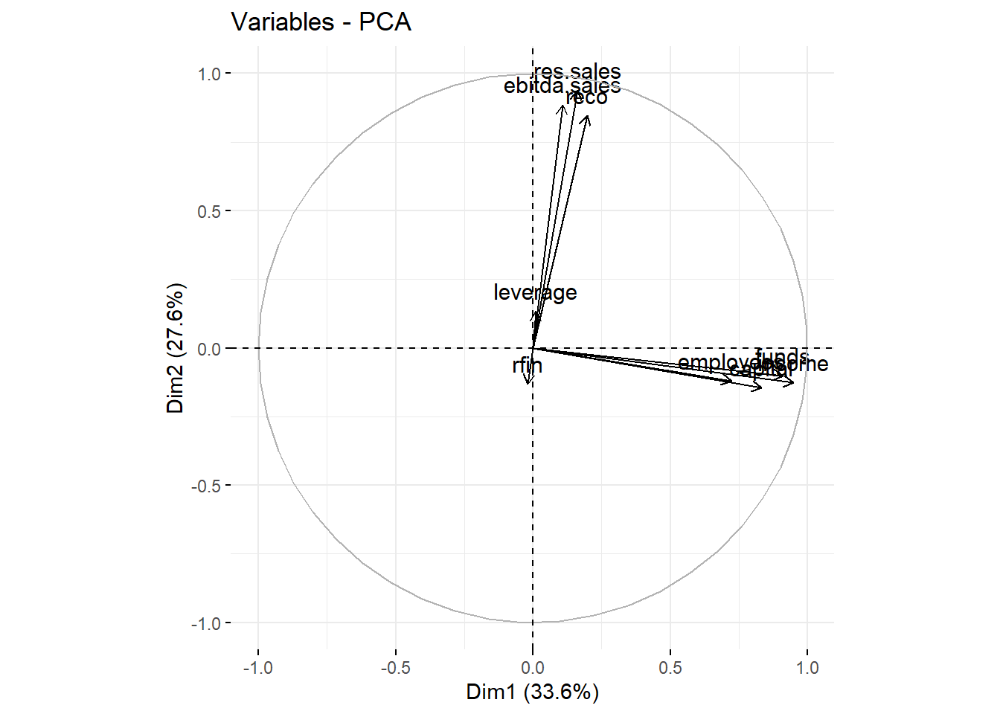
Here the top 5 by contribution
plot(dec.pca, choix = "var", select = "contrib 5")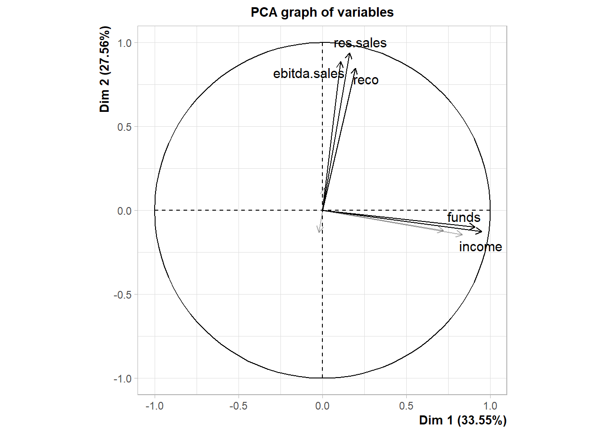
Here it is possible to obtain the latency for the dimensions
corrplot(dec.pca$var$contrib, is.corr = FALSE)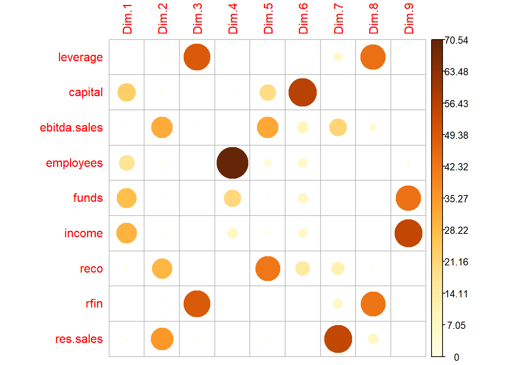
Contributions in both 1 and 2 dimensions
fviz_contrib(dec.pca, choice = "var", axes = 1:2)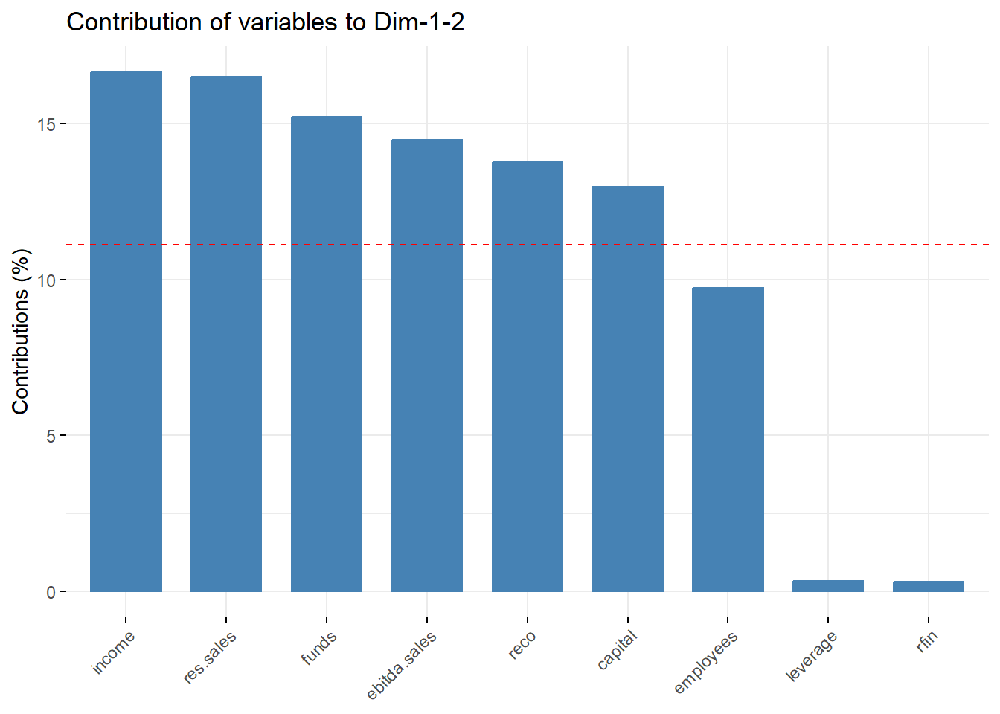
Contributions in Dim 1
fviz_contrib(dec.pca, choice = "var", axes = 1) 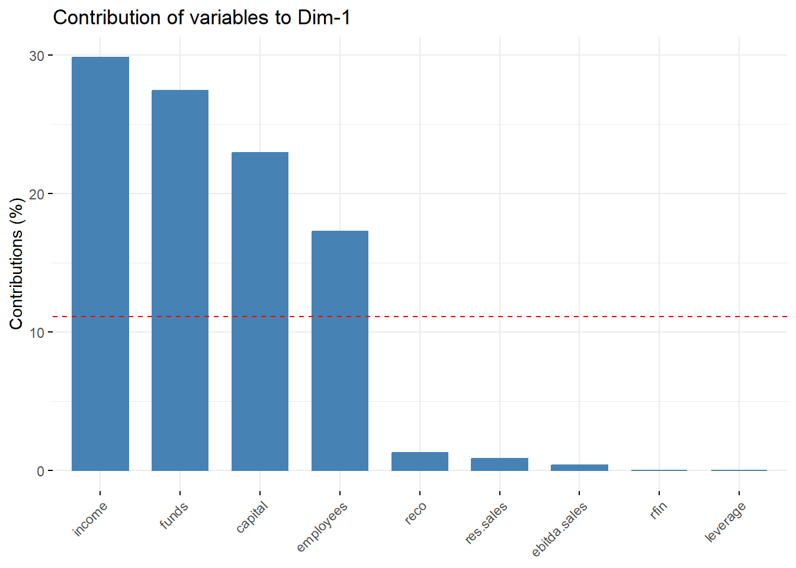
NOTES: * Positively correlated variables are grouped together. * Negatively correlated variables are positioned on opposite sides of the plot origin (opposed quadrants). * The distance between variables and the origin measures the quality of the variables on the factor map. * Variables that are away from the origin are well represented on the factor map.
5.9 Quality of representation
corrplot(dec.pca$var$cos2, is.corr = FALSE)
fviz_cos2(dec.pca, choice = "var", axes = 1:2)
NOTES:
- A high cos2 indicates a good representation of the variable on the principal component. In this case the variable is positioned close to the circumference of the correlation circle.
- A low cos2 indicates that the variable is not perfectly represented by the PCs.
- In this case the variable is close to the center of the circle.
fviz_pca_var(dec.pca, col.var = "cos2", gradient.cols = c("#00AFBB", "#E7B800", "#FC4E07"),
repel = TRUE) # Avoid text overlapping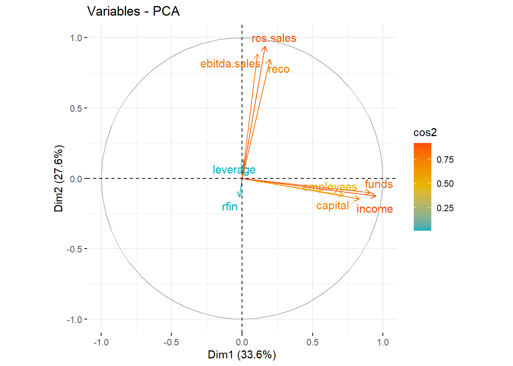
fviz_pca_var(dec.pca, alpha.var = "cos2")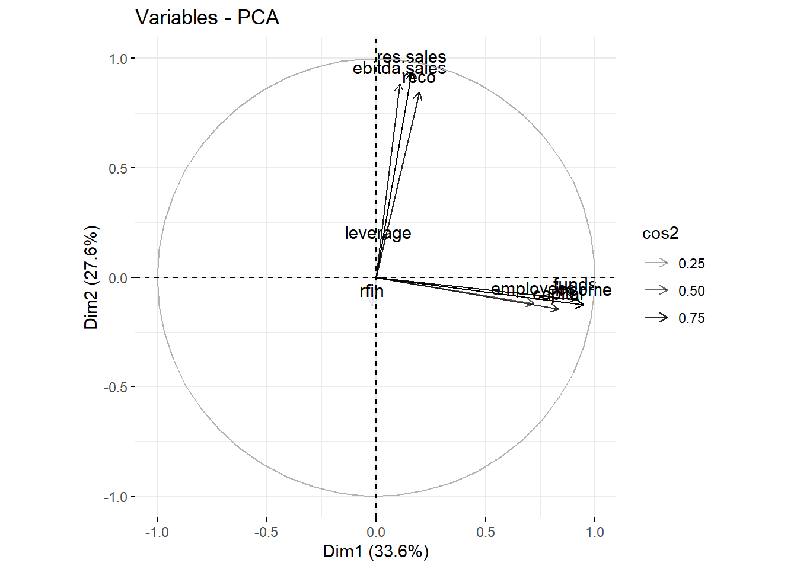
5.10 Contributions of variables to PCs
NOTES: * Variables that are correlated with PC1 (i.e., Dim.1) and PC2 (i.e., Dim.2) are the most important in explaining the variability in the data set. * Variables that do not correlated with any PC or correlated with the last dimensions are variables with low contribution and might be removed to simplify the overall analysis. * The larger the value of the contribution, the more the variable contributes to the component.
head(dec.pca$var$contrib, 4) Dim.1 Dim.2 Dim.3 Dim.4 Dim.5
leverage 0.004292438 0.7183313 49.237343756 0.002035508 0.1032054
capital 22.955878272 0.8523390 0.002364315 0.657965014 19.1588084
ebitda.sales 0.385283782 31.6353961 0.453264962 0.279690703 32.1881276
employees 17.249352750 0.5820460 0.008841405 70.537540588 3.6517267
Dim.6 Dim.7 Dim.8 Dim.9
leverage 0.08870647 5.616086758 44.09202250 0.13797586
capital 56.31530640 0.001762018 0.01252492 0.04305171
ebitda.sales 9.30405679 21.367328399 4.22051950 0.16633217
employees 6.59651401 0.006346992 0.04644396 1.32118761corrplot(dec.pca$var$contrib, is.corr = FALSE) 
5.10.1 Contributions of variables to PC1
fviz_contrib(dec.pca, choice = "var", axes = 1, top = 10)5.10.2 Contributions of variables to PC2
fviz_contrib(dec.pca, choice = "var", axes = 2, top = 10)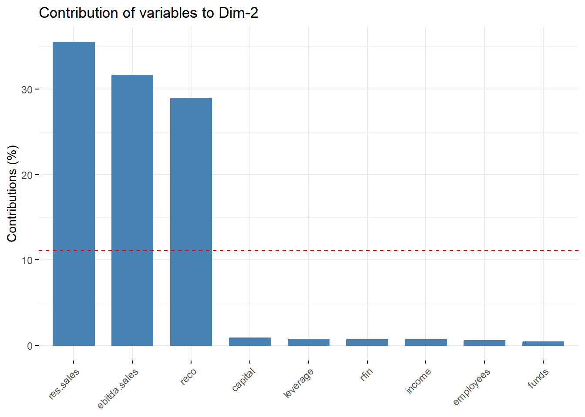
IMPORTANT
fviz_pca_var(dec.pca, col.var = "contrib", gradient.cols = c("#00AFBB", "#E7B800", "#FC4E07"))
6 AN EXTRA (Clustering approach)
6.1 Create a grouping variable using kmeans
Create 3 groups of variables (centers = 3)
set.seed(123)
res.km <- kmeans(dec.pca$ var$coord, centers = 3, nstart = 25)
grp <- as.factor(res.km$cluster)6.2 Color variables by groups
fviz_pca_var(dec.pca, col.var = grp, palette = c("#0073C2FF", "#EFC000FF", "#868686FF"),
legend.title = "Cluster")
6.3 Dimension description
res.desc <- dimdesc(dec.pca, axes = c(1:3), proba = 0.05)6.3.1 Description of dimension 1
res.desc$Dim.1
Link between the variable and the continuous variables (R-square)
=================================================================================
correlation p.value
income 0.9490495 2.524996e-231
funds 0.9098702 1.021917e-176
capital 0.8326012 2.450980e-119
employees 0.7217328 4.900441e-75
reco 0.1965436 2.227664e-05
res.sales 0.1622735 4.825241e-04
ebitda.sales 0.1078650 2.081210e-026.3.2 Description of dimension 2
res.desc$Dim.2
Link between the variable and the continuous variables (R-square)
=================================================================================
correlation p.value
res.sales 0.9387822 1.261877e-213
ebitda.sales 0.8857966 1.796311e-154
reco 0.8473617 1.041237e-127
leverage 0.1334780 4.174009e-03
funds -0.1003801 3.154400e-02
employees -0.1201506 9.981717e-03
income -0.1258779 6.928994e-03
rfin -0.1302399 5.196395e-03
capital -0.1453964 1.789380e-036.3.3 Description of dimension 3
res.desc$Dim.3
Link between the variable and the continuous variables (R-square)
=================================================================================
correlation p.value
rfin 0.96141083 2.805589e-258
res.sales 0.12161220 9.106320e-03
ebitda.sales 0.09220329 4.835783e-02
leverage -0.96098730 3.236079e-257The dimdesc() function calculates the correlation coefficient between a variable and a dimension and performs a significance test. This function is very useful in settings where there are many variables and allows to make the interpretation easier.
SUMMARY: Latency of the PCi
Component 1: The variables capital, employees, funds and income show correlations with component 1 greater than 0.7, indicating that they are highly correlated with it. That is, the higher the value of these four variables in a company, the higher its score in this component. Given the nature of these variables, this component represents the size of the company.
Component 2: The variables ebitda.sales, reco and res.sales show correlations greater than 0.85 with component 2. This component could therefore represent the profitability of the company. The more profitable the company, the higher the score for the second component.
Component 3: Finally, the variables leverage and rfin define component 3, which is related, in this way, to the company’s indebtedness. The higher the leverage of a company and the lower the financial profitability, the higher the score it will achieve in the component, which will normally indicate a greater indebtedness of the company.
6.4 INDIVIDUALS
ind <- get_pca_ind(dec.pca)6.4.1 Coordinates of individuals
head(ind$coord) Dim.1 Dim.2 Dim.3 Dim.4 Dim.5 Dim.6 Dim.7
1 26.560899 -2.6048220 0.16950893 -9.7219520 -0.7899918 2.517655 0.07645591
2 20.037224 -3.1866039 -0.17313469 6.3329265 4.4472656 -7.407665 0.02300838
3 6.557825 -0.6872858 0.04424650 0.2543293 -2.0934164 3.096068 -0.03341952
4 3.777499 -0.8692112 -0.02985954 -0.6072561 -0.7457002 1.015876 -0.22054131
5 7.269370 -1.5958065 -0.30924872 9.8007803 -2.9888914 4.228950 0.06718604
6 6.242442 -1.6076261 -0.17795085 3.9481944 -1.8129481 3.017294 -0.11178882
Dim.8 Dim.9
1 0.07477900 0.08113574
2 0.14102601 -0.19460154
3 -0.03913375 -0.79448010
4 0.04841555 -0.76882545
5 -0.04797579 -0.32223302
6 -0.14869290 0.691021936.4.2 Plots from QUALITY
fviz_pca_ind(dec.pca)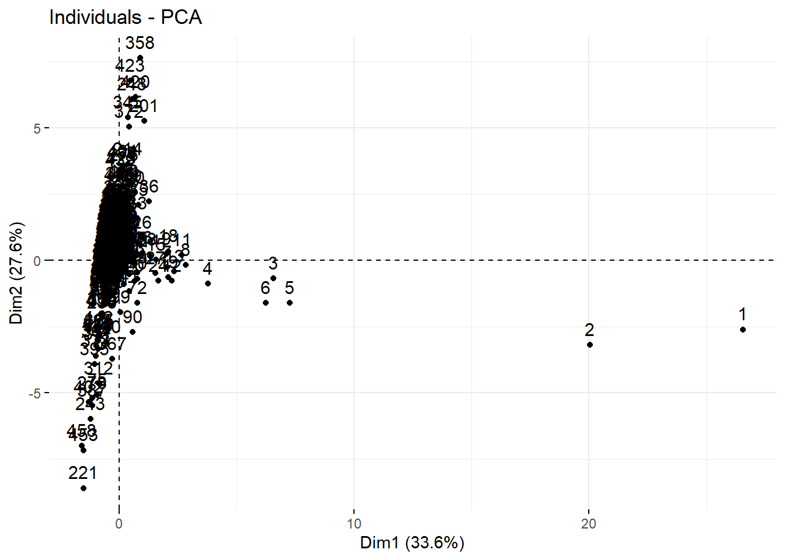
fviz_pca_ind(dec.pca, col.ind = "cos2", gradient.cols = c("#00AFBB", "#E7B800", "#FC4E07"),
repel = TRUE)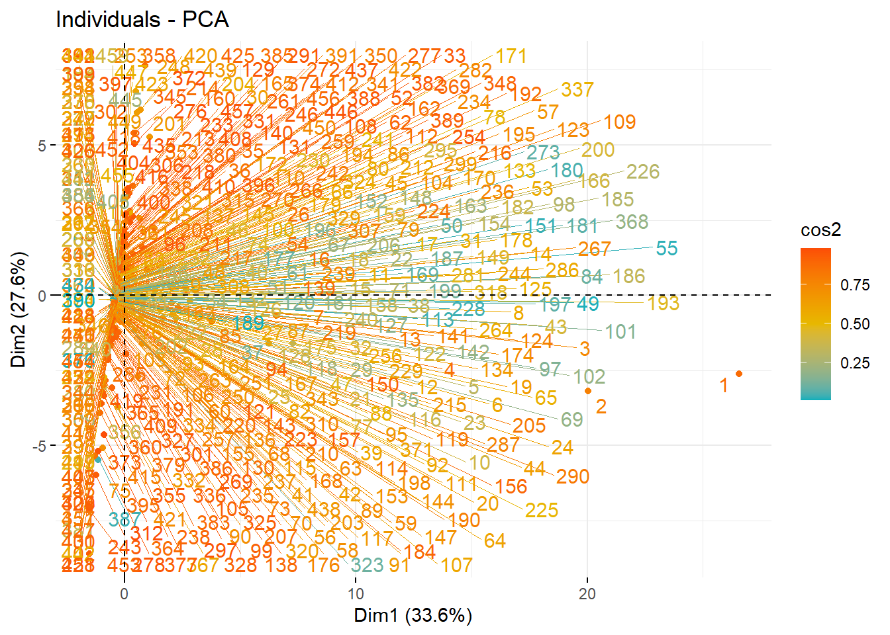
fviz_pca_ind(dec.pca, pointsize = "cos2", pointshape = 21, fill = "#E7B800",
repel = TRUE) # Avoid text overlapping (slow if many points))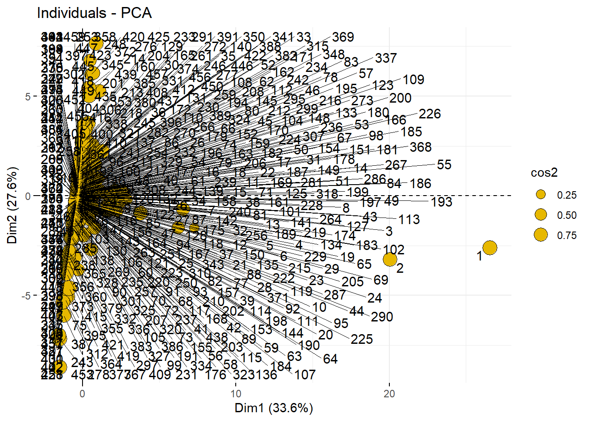
fviz_pca_ind(dec.pca, col.ind = "cos2", pointsize = "cos2", gradient.cols = c("#00AFBB", "#E7B800", "#FC4E07"),
repel = TRUE)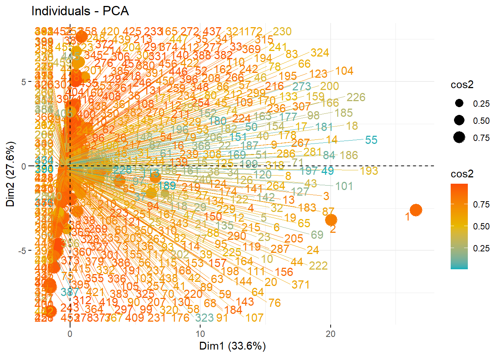
fviz_pca_ind(dec.pca, col.ind = "contrib", gradient.cols = c("#00AFBB", "#E7B800", "#FC4E07"),
repel = TRUE)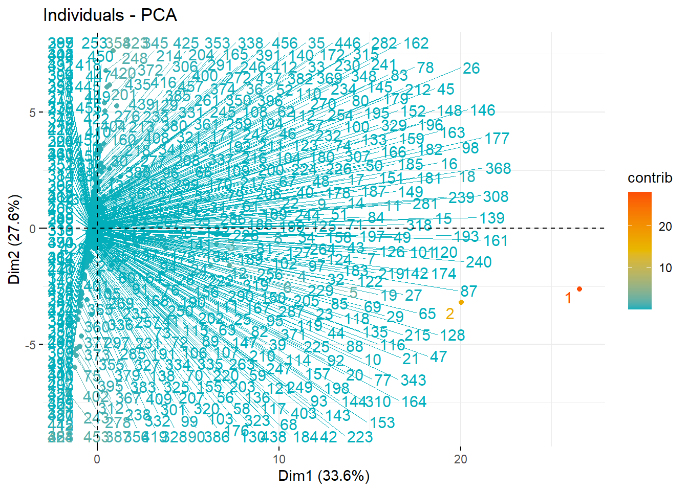
fviz_pca_ind(dec.pca, pointsize = "contrib", pointshape = 21, fill = "#E7B800",
repel = TRUE) # Avoid text overlapping (slow if many points))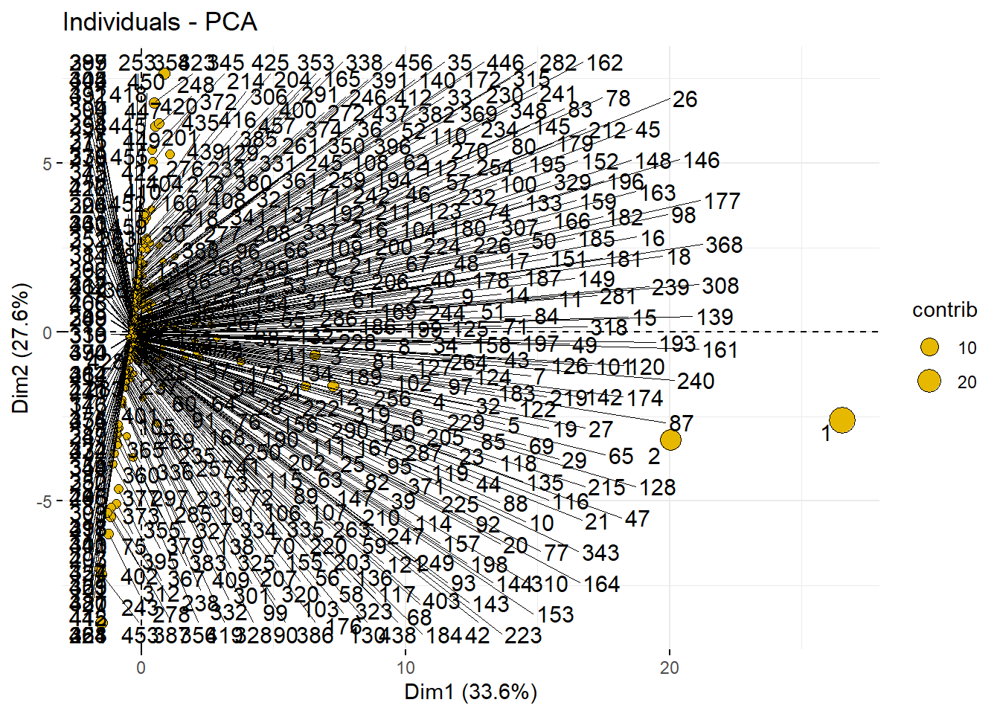
fviz_pca_ind(dec.pca, col.ind = "contrib", pointsize ="contrib",
gradient.cols = c("#00AFBB", "#E7B800", "#FC4E07"), repel = TRUE)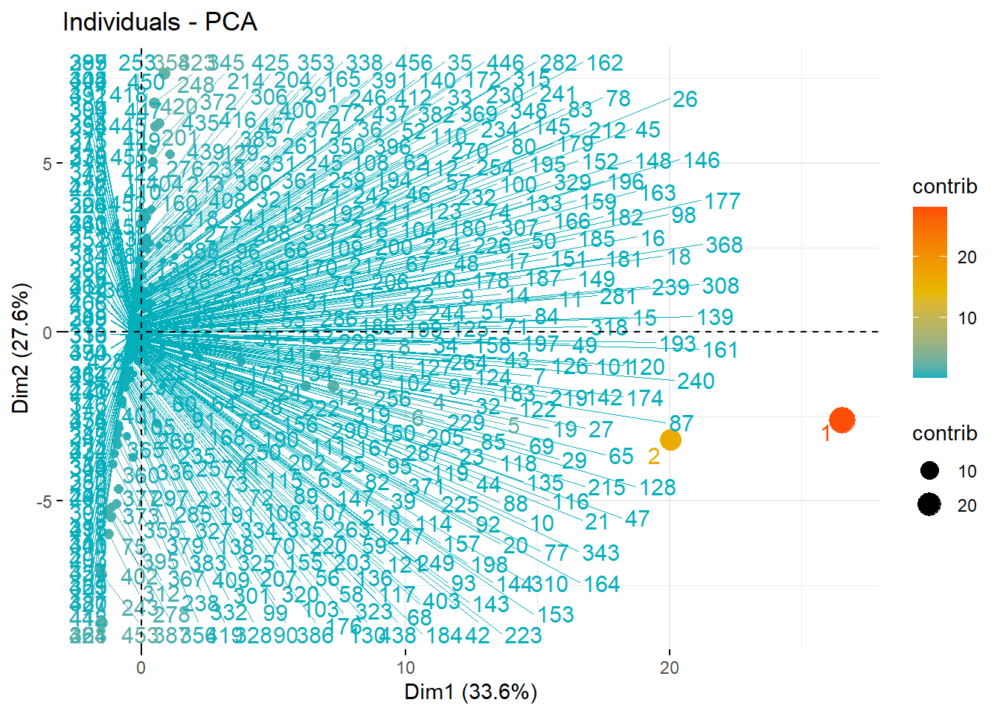
6.4.3 Plots from CONTRIBUTION
6.4.3.1 Total contribution on PC1 and PC2
fviz_contrib(dec.pca, choice = "ind", axes = 1:2)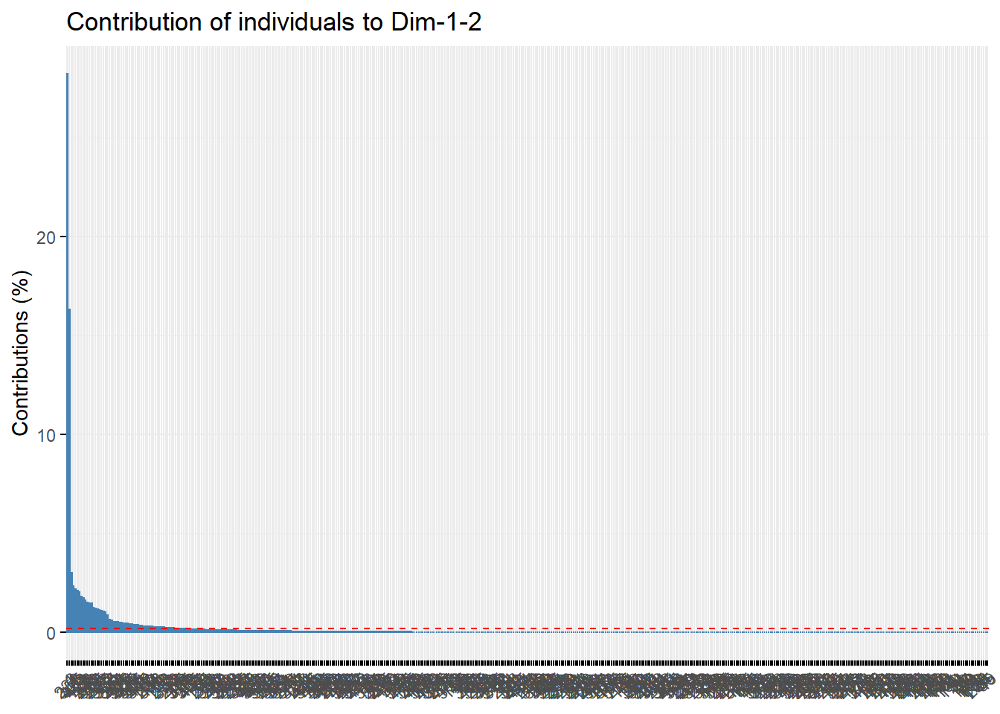
fviz_contrib(dec.pca, choice = "ind", axes = 1:2, top = 10)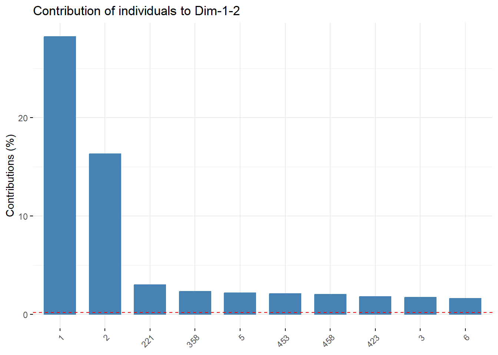
6.4.3.2 Individuals on dimensions 2 and 3
fviz_pca_ind(dec.pca, axes = c(2, 3))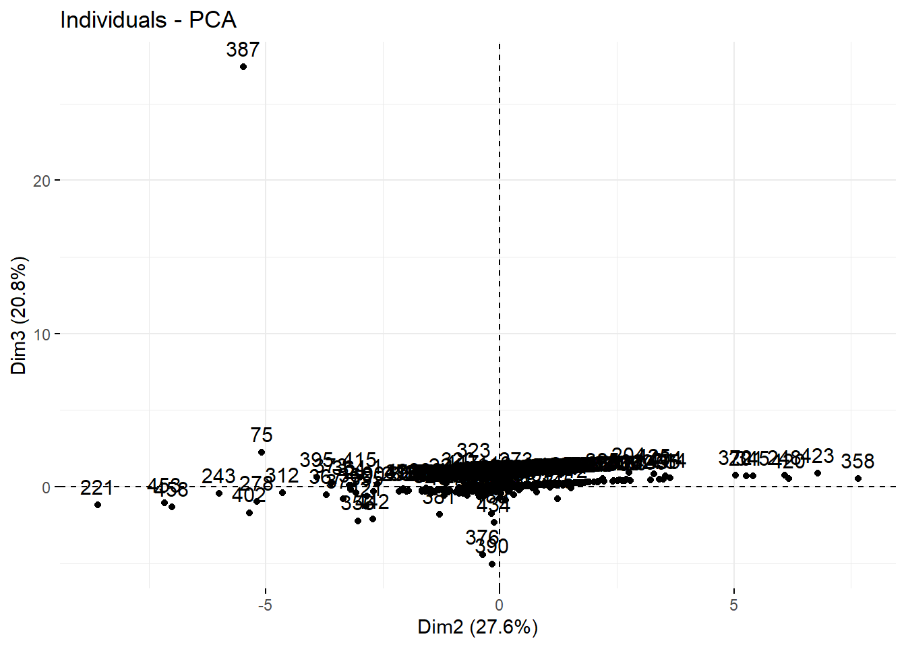
fviz_contrib(dec.pca, choice = "ind", axes = 1:3, top=10)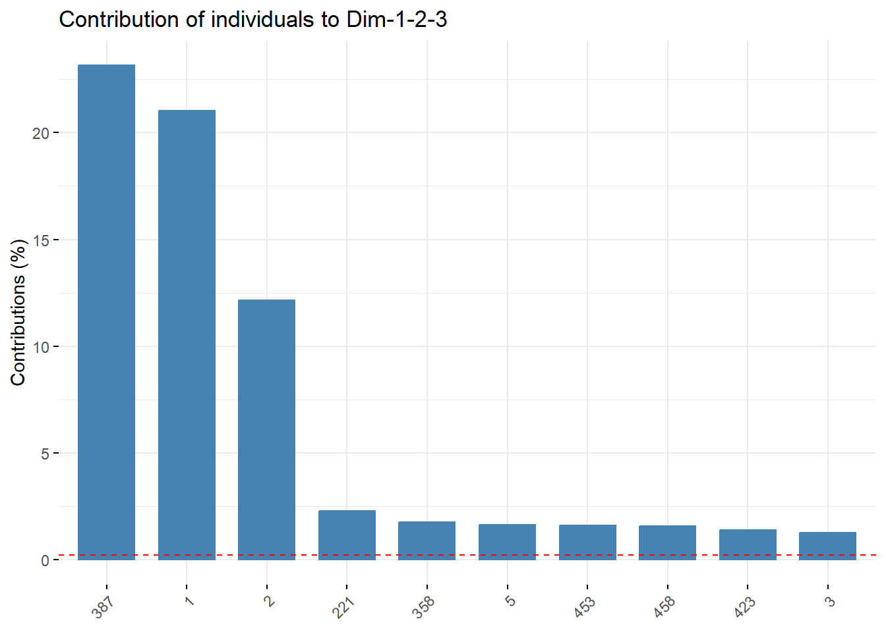
6.4.3.3 Plot contributions complet
fviz_pca_biplot(dec.pca, repel = TRUE,axes=c(1,2), col.var = "#2E9FDF", col.ind = "#696969")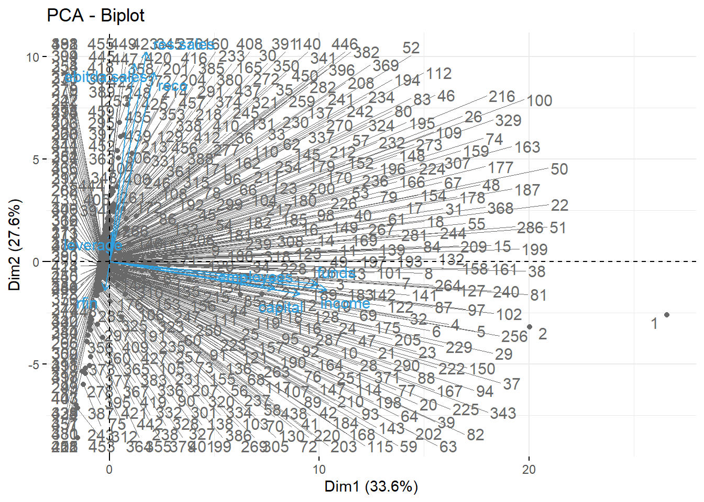
NOTES:
Roughly speaking a biplot (looking at Individuals) can be interpreted as follow: * an individual that is on the same side of a given variable has a high value for this variable * an individual that is on the opposite side of a given variable has a low value for this variable.
6.5 PCA suplementary variables
Supplementary variables have no influence on the principal components of the analysis. They are going to help to interpret the dimensions of variability. Add also supplementary categorical variable, Competition. The categories’ centres of gravity of this new variable appear on the graph of the individuals.They are located at the barycentre of the individuals who took them and they represent an average individual.
CHECK Help (PCA) and this example
data("decathlon")
res.pca <- PCA(decathlon, quanti.sup = 11:12, quali.sup = 13, graph = FALSE)
res.pca$quanti.sup$coord
Dim.1 Dim.2 Dim.3 Dim.4 Dim.5
Rank -0.6705104 0.05139812 -0.05834304 -0.1614077 -0.3500257
Points 0.9561543 -0.01651613 -0.06635212 0.2360079 0.1136256
$cor
Dim.1 Dim.2 Dim.3 Dim.4 Dim.5
Rank -0.6705104 0.05139812 -0.05834304 -0.1614077 -0.3500257
Points 0.9561543 -0.01651613 -0.06635212 0.2360079 0.1136256
$cos2
Dim.1 Dim.2 Dim.3 Dim.4 Dim.5
Rank 0.4495841 0.0026417671 0.003403910 0.02605246 0.12251798
Points 0.9142310 0.0002727826 0.004402604 0.05569973 0.01291077fviz_pca_var(res.pca)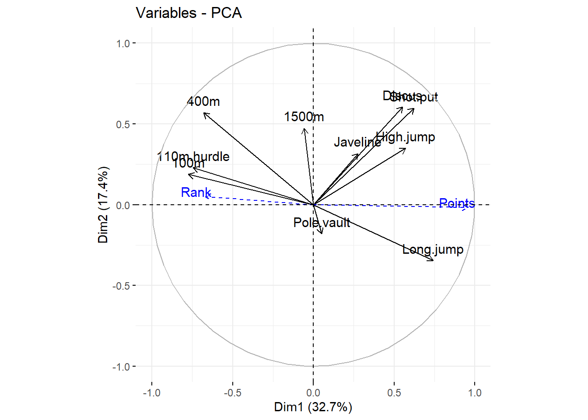
res.pca$quali$coord
Dim.1 Dim.2 Dim.3 Dim.4 Dim.5
Decastar -0.6001211 -0.03765491 0.2889044 -0.13955756 0.4013710
OlympicG 0.2786276 0.01748264 -0.1341342 0.06479458 -0.1863508
$cos2
Dim.1 Dim.2 Dim.3 Dim.4 Dim.5
Decastar 0.4027688 0.001585701 0.09334399 0.02178135 0.1801648
OlympicG 0.4027688 0.001585701 0.09334399 0.02178135 0.1801648
$v.test
Dim.1 Dim.2 Dim.3 Dim.4 Dim.5
Decastar -1.429753 -0.1231198 1.050392 -0.5850181 2.090235
OlympicG 1.429753 0.1231198 -1.050392 0.5850181 -2.090235
$dist
Decastar OlympicG
0.9456076 0.4390321
$eta2
Dim.1 Dim.2 Dim.3 Dim.4 Dim.5
Competition 0.05110487 0.0003789623 0.0275831 0.008556153 0.1092271fviz_pca_ind(res.pca, habillage = 13, addEllipses =TRUE, ellipse.type = "confidence",
palette = "jco", repel = TRUE) 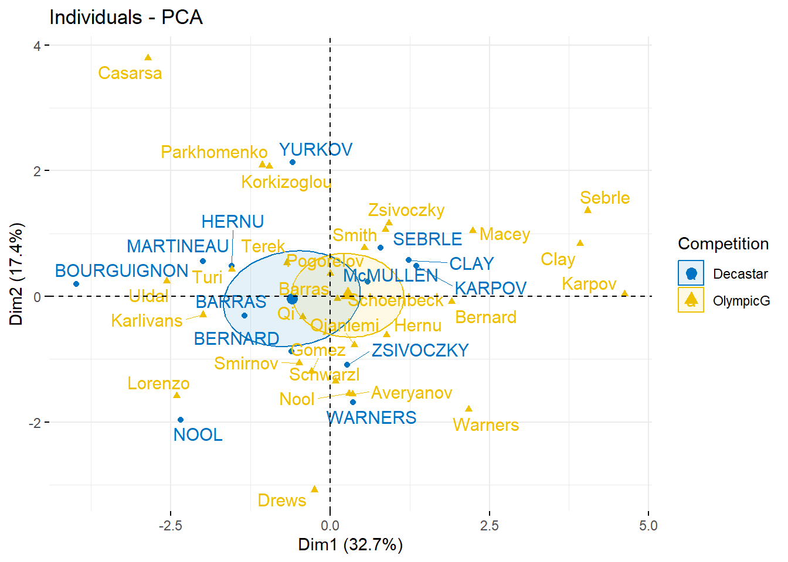
fviz_pca_biplot(res.pca,
col.ind = decathlon$Competition, palette = "jco",
addEllipses = TRUE, label = "var",
col.var = "black", repel = TRUE,
legend.title = "Competition") 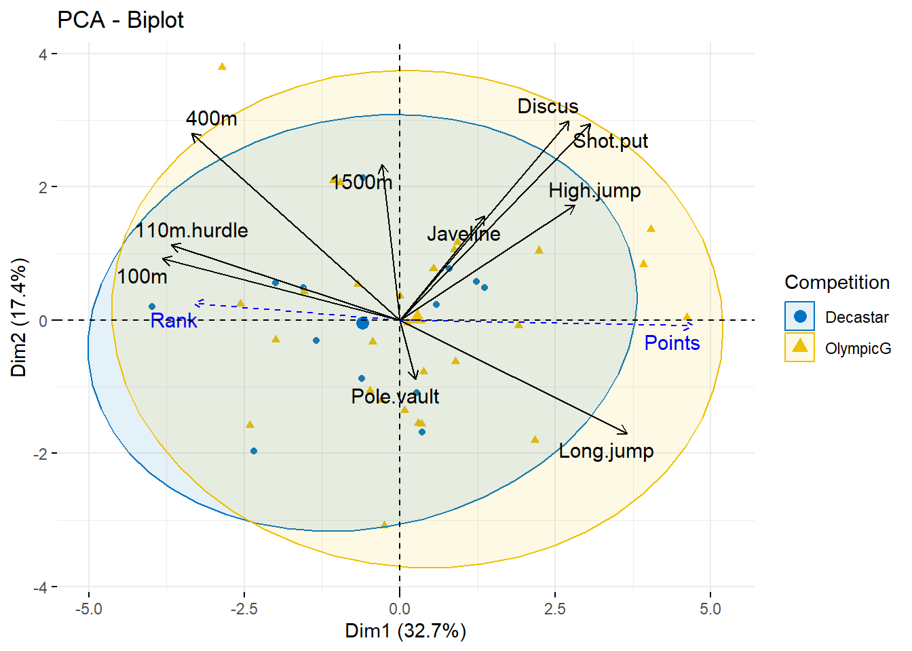
plot(res.pca, cex = 0.8, habillage = "Competition")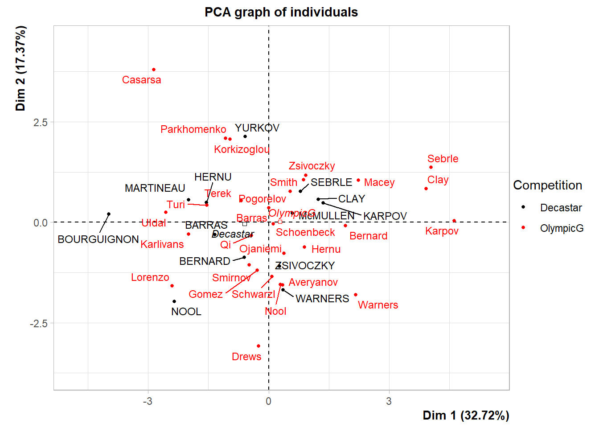
plotellipses(res.pca, level = 0.95)Warning: ggrepel: 3 unlabeled data points (too many overlaps). Consider
increasing max.overlaps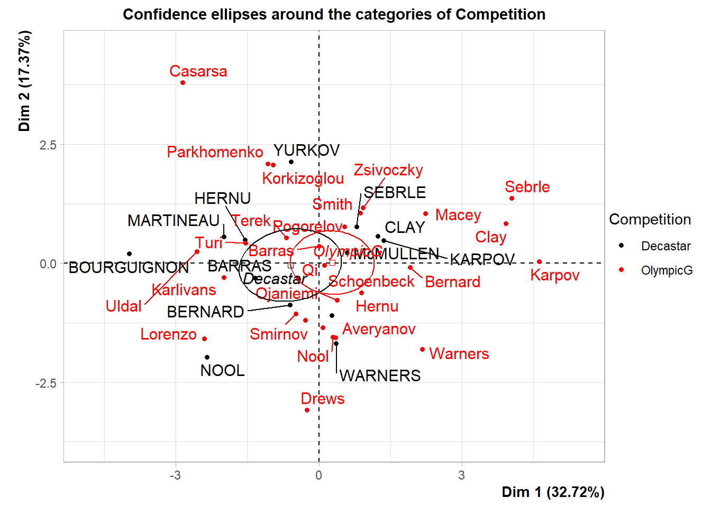
7 Bibliografia
- More elegant graphs and options. Check at: http://www.sthda.com/english/articles/31-principal-component-methods-in-r-practical-guide/112-pca-principal-component-analysis-essentials/
8 To go further:
To add supplementary individuals, use the following argument of the PCA function: ind.sup. In most PCAs, the weight of the individuals is equal to 1/(number of individuals). However, it is sometimes necessary to give a specific weight to some individuals. To do so, the user will have to use the argument: row.w.
It can also be interesting to give a specific weight to some variables. Here, the user will have to use the argument: col.w
Aquesta web està creada por Dante Conti y Sergi Ramírez, (c) 2024